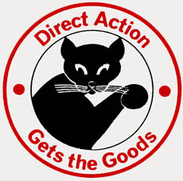

Submitted on Mon, 09/18/2017 - 4:29pm
In 2016, $4,510.00 was illegitimately withdrawn and spent from the Boston IWW General Membership Branch’s bank account. This is a statement of what occurred in that case.
Submitted on Wed, 01/27/2016 - 12:49am
By 6eoff - Boston IWW, January 25, 2016
 Pictured are MISU’s John P (recently reinstated), Evan and John M, as well as Genevieve, Geoff, Max and Jon from the Boston IWW.
Pictured are MISU’s John P (recently reinstated), Evan and John M, as well as Genevieve, Geoff, Max and Jon from the Boston IWW.
IWW members returned to aid our friends and fellow workers in the Museum Independent Security Union on 1/23/16. Despite freezing temperatures, our hearts were warmed by a message from John M of MISU, who conveyed his belief that IWW support was “instrumental” in getting unfairly-fired MISU member John P re-hired with no discipline and with back pay. John P was fired by Boston’s Museum of Fine Arts merely for fulfilling his responsibilities as a parent. The outcry that followed (which Boston wobs are proud have helped with) compelled the museum to take John back. The MFA has been forcing working parents out of their jobs and taking a hard line in contract negotiations with MISU, and the battle is not over yet. Please join the Boston IWW and MISU for pickets at the Museum of Fine Arts, Saturdays from 12-2 pm.
Submitted on Sun, 01/20/2013 - 4:05pm
On December 17, Starbucks Coffee abruptly informed "shift supervisors," also known as shifts, in MA that they would no longer receive any income from customers' tips as of January 7. Shift supervisors have extra responsibilities, but start at just $11/hr. The loss of tips represents a cut of up to 10-20% of their income! Shifts comprise roughly one third of Starbucks' MA workforce. The company has said it will not provide any immediate raise to make up for the effective salary cut, and that any future increase shifts may receive won't be retroactive. For years, Starbucks has essentially arranged for customers to subsidize shifts' low pay with tips, but the MA courts have ruled this illegal.
Shifts are demanding that their huge, profitable employer ensures no Starbucks worker loses income from the court ruling on tips. They want a $4/hour raise, and transparency from the company, which has been maddeningly opaque in its dealings with employees, refusing to say anything about any possible raise until a petition link shifts called attention to their plight.
Submitted on Tue, 08/09/2011 - 7:12pm
Members of the Boston IWW joined striking Verizon workers for their second day of pickets at the regional headquarters in downtown Boston. Striking members of IBEW local 2222 were pleased with the show of solidarity as we marched together in the sometimes driving rain. The strikers were in good spirits as they walked the all-day picket line and confronted scabs at the local Verizon Headquarters.
The workers went on strike after Verizon, taking advantage of the current economy and widespread attacks on the working class, demanded concessions from the workers while the company and its top executives have taken in billions of dollars in profits. In fact, the company has made more than $15 billion in profits in the past four years while at the same time paying no federal income tax from 2009-2010 and instead receiving over $1 billion in tax refunds. The company was demanding that workers contribute more to healthcare costs, the elimination of pensions, a reduction in sick pay and elimination of Veteran’s and Martin Luther King day as paid holidays. Further, the company was pushing to have more work outsourced to non-union workers. As a result of these demands the negotiations broke down and 45,000 workers from CWA and IBEW walked out, including 6,000 in Massachusetts.
At times tensions rose during the picket as scabs exited the building. At one point food was delivered to the workers inside by the notoriously exploitative Upper Crust Pizza, who previously had their windows smashed on May Day because of their abuse of workers. Picketers attempted to block the delivery of the food while police protected those making the delivery. Tempers flared and at one point 100s of sodas were knocked from a palate and later thrown at the delivery van. Workers also attempted to encircle and block the van until finally cops and union bosses convinced them to let the van flee the scene. The picketers showed a degree of militancy and class outrage not commonly seen at other pickets and labor rallies. One Verizon worker who was not familiar with the IWW was given a flyer explaining the position of the IWW and was very receptive. The Verizon workers plan on being out on the picket lines every day for at least two weeks. The Boston branch plans on supporting them as long as the strike continues while at the same time spreading the idea of revolutionary unionism to the rank and file workers.
Submitted on Mon, 05/05/2008 - 2:36pm

By DAVID TABER - Jamaica Plain Gazette, May 2, 2008
SOUTH
ST.—Two workers who were fired from the Jamaica Plain store of Harvest
Co-op Markets in the last six months claim they were terminated for
expressing support for union organizing efforts at the nonprofit
supermarket. Harvest denies their accusations.
Diego Bencosme and Deon Furtick had both worked at Harvest for
close to four years. They were both fired for failing to punch out when
they went off shift—a rule they claim was rarely, if ever, enforced
during their tenures.
They were fired without prior warnings, they said.
Both say they were fired because of their support for a current
effort by the Industrial Workers of the World (IWW) to organize at
Harvest. Both have filed complaints with the National Labor Relations
Board.